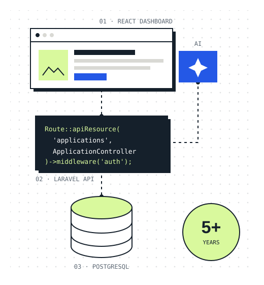
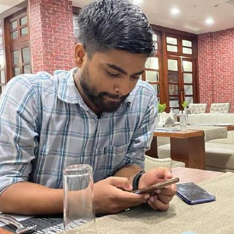

Senior Software Engineer & Founder · Guwahati, India · Open to remote roles
I build and scale secure web platforms that people rely on.
I’m Bhaskar Ranjan Bora, a senior software engineer with 5+ years of experience shipping production systems for startups, enterprises and government. I work mainly in Laravel/PHP, React and PostgreSQL, and I’m looking for remote engineering roles with international teams.

Experience
Where I’ve done the work.
Government platforms, education systems, SaaS dashboards and internal enterprise tools, where reliability, security and long-term maintenance matter.
-
Mar 2022 — Present
Founder & Senior Software Engineer
COMPLIT · Guwahati, India
I lead a team of designers, developers and SEO specialists delivering web and mobile products. I also work remotely with international clients as a long-term engineering partner: Laravel backends, React admin panels, database design, legacy modernization and AI features built on the OpenAI API.
-
Feb 2021 — Mar 2022
Senior Project Consultant
EY · Arunachal Pradesh, India
Worked on the Ease of Doing Business (EODB) programme for the Government of Arunachal Pradesh, driving digital transformation and simplifying regulatory processes for investors and entrepreneurs alongside government stakeholders.
-
Nov 2019 — Jan 2021
Project Associate
CDAC · Noida, India
Built a Spring-based application for the Director of Health Schemes that lets people across India apply for government health schemes.
-
Mar 2018 — Apr 2018
Internship Trainee
NESAC · Shillong, India
Developed a machine-learning model that detects plant diseases from leaf colour patterns to support early intervention for farmers.
Selected work
Some things I’ve built.
Open-source projects from my GitHub, from developer tooling to cross-platform apps and real-time dashboards.
About me
Senior engineering support you can rely on.

I help teams build, scale and modernize serious web platforms. My work with EY, CDAC and NIC on large government and enterprise projects taught me to collaborate closely with stakeholders and to care about security, performance and the people who maintain the code after launch.
Running COMPLIT means I own delivery end to end, from scoping with clients to shipping and supporting production systems. I’m comfortable working across time zones and communicating in writing.
Education: B.Tech in Computer Science, NERIST (2016–2019) · Diploma in Computer Science, Assam Engineering Institute (2013–2016)
Full profile on LinkedIn ↗Toolkit
Core strengths
- Laravel & PHP
- React dashboards & admin panels
- PostgreSQL & MySQL
- OpenAI API integrations
- Legacy system modernization
- Performance & security
- Flutter & Dart
- Java & Spring
- Client & stakeholder management
Let’s connect
Have a role or project in mind?
I’m open to remote senior software-engineering roles and long-term engineering partnerships. Email or LinkedIn is the quickest way to reach me.